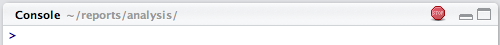
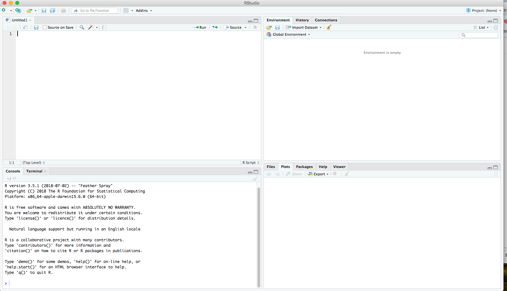
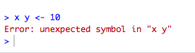

Chapter 5 R Basics
This unit introduces you to the R programming language and the tools we use to program in R. We will explore:
- What is R?, a brief introduction to the R language.
- RStudio, a tour of the Interactive Development Environment RStudio.
- R Packages, extra tools and functionalities.
- R Markdown, a type of R script file we will be working with in this class.
5.1 What is R?
R is a versatile, open-source programming and scripting language that is useful both for statistics and data science. It is inspired by the programming language S. Some of its best features are:
It is free, open-source, and available on every major platform. As a result, if you do your analysis in R, most people can easily replicate it.
It contains a massive set of packages for statistical modelling, machine learning, visualization, and importing and manipulating data. Over 14,000 packages are available as of August 2019. Whatever model or graphic you are trying to do, chances are that someone has already tried to do it (and a package for it exists).
It is designed for statistics and data analysis, but also general-purpose programming.
It is an Interactive Development Environment tailored to the needs of interactive data analysis and statistical programming.
It has powerful tools for communicating your results. R packages make it easy to produce HTML or PDF reports, or create interactive websites.
A large and growing community of peers.
R also has a number of shortcomings:
It has a steeper learning curve than SPSS or Stata.
R is not a particularly fast programming language, and poorly written R code can be terribly slow. R is also a profligate user of memory.
Much of the R code you will see in the wild is written in haste to solve a pressing problem. As a result, code is not very elegant, fast, or easy to understand. Most users do not revise their code to address these shortcomings.
Inconsistency is rife across contributed packages, even within base R. You are confronted with over 20 years of evolution every time you use R. Learning R can be tough, because there are many special cases to remember.
5.2 RStudio
Throughout this class, we will assume that you are using R via RStudio. First-time users often confuse the two. At its simplest, R is like a car’s engine, while RStudio is like a car's dashboard.

More precisely, R is a programming language that runs computations, while RStudio is an integrated development environment (IDE) that provides an interface with many convenient features and tools. Just as the way of having access to a speedometer, rear-view mirrors, and a navigation system makes driving much easier, using RStudio’s interface makes using R much easier as well.
RStudio includes a console, a syntax-highlighting code editor, as well as tools for plotting, history, debuggingm and workspace management. It is also free and open-source. Yay!
NB: We do not have to use RStudio to use R. For example, we can write R code in a plain text editor (like
texteditornotepad) and then execute the script using the shell (e.g.terminalin Mac). But this is not ideal.
After you install R and RStudio on your computer, you will have two new applications you can open. We will always work in RStudio -- not in the R application.

After you open RStudio, you should see something similar to this:

5.2.1 Console
There are two main ways of interacting with R: by using the console or by using the script editor.
The console window (in RStudio, the bottom left panel) is the place where R is waiting for you to tell it what to do and where it will show the results of a command.
You can type commands directly into the console, but they will be forgotten when you close the session. Try it out now.
> 2 + 2If R is ready to accept commands, the R console shows a > prompt. If it receives a command (by typing, copy-pasting, or sending from the script editor using Ctrl-Enter), R will try to execute it andm when ready, show the results and come back with a new >-prompt to wait for new commands.
If R is still waiting for you to enter more data because it is not complete yet, the console will show a + prompt. It means that you have not finished entering a complete command. This happens when you have not 'closed' a parenthesis or quotation. If you are in RStudio and this happens, click inside the console window and press Esc; this should help get you out of trouble.
> "This is an incomplete quote
+More Console Features
Retrieving previous commands: As you work with R, you will often want to re-execute a command which you previously entered. Recall previous commands using the up and down arrow keys.
Console title bar: This screenshot illustrates a few additional capabilities provided by the console title bar:
- Display of the current working directory.
- The ability to interrupt R during a long computation.
- Minimizing and maximizing the console in relation to the Source pane (by using the buttons at the top-right or by double-clicking the title bar).

5.2.2 Scripts
It is better practice to enter commands in the script editor and save the script. This way, you have a complete record of what you did, you can easily show others how you did it, and you can do it again later on if needed. Open it up either by clicking the File menu and selecting New File, then R script; or by using the keyboard shortcut Cmd/Ctrl + Shift + N. Now you will see four panes.

The script editor is a great place to put code you care about. Keep experimenting in the console, but, once you have written code that works and does what you want, put it in the script editor.
RStudio will automatically save the contents of the editor when you quit RStudio and load them when you re-open RStudio. Nevertheless, it is a good idea to save your scripts regularly and to back them up.
5.2.3 Running Code
While you certainly can copy-paste code that you would like to run from the editor into the console, this workflow is pretty inefficient. The key to using the script editor effectively is to memorize one of the most important keyboard shortcuts in RStudio: Cmd/Ctrl + Enter. This executes the current R expression from the script editor in the console.
For example, take the code below. If your cursor is somewhere on the first line, pressing Cmd/Ctrl + Enter will run the complete command that generates dems. It will also move the cursor to the next statement (beginning with reps). That makes it easy to run your complete script by repeatedly pressing Cmd/Ctrl + Enter.
dems <- (55 + 70) * 1.3
reps <- (20 - 1) / 2Instead of running expression by expression, you can also execute the complete script in one step: Cmd/Ctrl + Shift + S. Doing this regularly is a great way to check that you have captured all the important parts of your code in the script.
5.2.5 Diagnostics and errors
The script editor will also highlight syntax errors with a red squiggly line and a cross in the sidebar:

You can hover over the cross to see what the problem is:

If you try to execute the code, you will see an error in the console:

When errors happen, your code is haulted -- meaning it is never executed. Errors can be frustrating in R, but, with practice, you will be able to debug your code quickly.
5.2.6 Errors, Messages, and Warnings
One thing that intimidates new R and RStudio users is how it reports errors, warnings, and messages. R reports errors, warnings, and messages in a glaring font, which makes it seem like it is scolding you. However, seeing red text in the console is not always bad:
Errors: When the text is a legitimate error, it will be prefaced with "Error:", and R will try to explain what went wrong. Generally, when there is an error, the code will not run. Think of errors as a red traffic light: something is wrong!
Warnings: When the text is a warning, it will be prefaced with "Warning:", and R will try to explain why there is a warning. Generally, your code will still work, but perhaps not in the way you would expect. Think of warnings as a yellow traffic light: everything is working fine, but watch out/pay attention.
Messages: When the text doesn not start with either "Error:" or "Warning:", it is just a friendly message. These are helpful diagnostic messages and they do not stop your code from working. Think of messages as a green traffic light: everything is working fine, and keep on going!
5.2.7 R Environment
Turn your attention to the upper right pane. This pane displays your "global environment" and contains the data objects you have saved in your current session. Notice that we have the two objects created earlier, dems and reps, along with their values.
You can list all objects in your current environment by running:
ls()
#> [1] "dems" "reps"Sometimes we want to remove objects that we no longer need.
x <- 5
rm(x)If you want to remove all objects from your current environment, you can run:
rm(list = ls())5.3 R Packages
The best part about R are its user-contributed packages (also called "libraries"). A package is a collection of functions (and sometimes data) that can be used by other programers.
A good analogy for R packages is they are like apps you can download onto a mobile phone:

So R is like a new mobile phone: while it has a certain amount of features when you use it for the first time, it does not have everything. R packages are like the apps you can download onto your phone from Apple's App Store or Android's Google Play.
Let's continue this analogy by considering the Instagram app for editing and sharing pictures. Say you have purchased a new phone and you would like to share a photo you have just taken with friends and family on Instagram. You need to:
- Install the app: Since your phone is new and does not include the Instagram app, you need to download the app from either the App Store or Google Play. You do this once and you are set for the time being. You might need to do this again in the future when there is an update to the app.
- Open the app: After you have installed Instagram, you need to open the app.
The process is very similar for using an R package. You need to:
- Install the package: This is like installing an app on your phone. Most packages are not installed by default when you install R and RStudio. Thus, if you want to use a package for the first time, you need to install it first. Once you have installed a package, you likely will not install it again unless you want to update it to a newer version.
- "Load" the package: Loading a package is like opening an app on your phone. Packages are not loaded by default when you start RStudio on your computer; you need to load each package you want to use every time you start RStudio.
5.3.1 Installing Packages
First, we download the package from one of the CRAN mirrors onto our computer. For this we use install.packages("package-name"). If you have not set a preferred CRAN mirror in your options(), a menu will pop up asking you to choose a location.
Let's download the package dplyr.
install.packages("dplyr")If you run into errors later in the course about a function or package not being found, run the install.packages function to make sure the package is actually installed.
Important: Once we download the package, we never need to run install.packages again (unless we get a new computer).
5.3.2 Loading Packages
Once we download the package, we need to load it into our session to use it. This is required at the beginning of each R session. This step is necessary because, if we automatically loaded every package we have ever downloaded, our computer would fry.
library(dplyr)The message tells you which functions from dplyr conflict with functions in base R (or from other packages you might have loaded).
5.3.3 Challenge
Let's go ahead and download some core, important packages we will use for the rest of the course. Download (if you have not done so already) and load the following packages:
tidyversermarkdownknitrgapminderdevtoolsstargazerrtweetkableExtra
5.4 R Markdown
Throughout this course, we will be using R Markdown for lecture notes and homework assignments. R Markdown documents combine executable code, results, and prose commentary into one document. Think of an R Markdown files as a modern-day lab notebook, where you can capture not only what you did, but also what you were thinking.
The filename of an R Markdown document should end in .Rmd or .rmd. An R Markdown document can also be converted to an output format, like PDF, HTML, slideshows, Word files, and more.
R Markdown documents contain three important types of content:
- An (optional) YAML header surrounded by
---s. - Chunks of R code surrounded by
```. - Text mixed with simple text formatting like
# headingand_italics_.
5.4.1 YAML Header
YAML stands for "yet another markup language." R Markdown uses it to control many details of the output.
---
title: "Homework 1"
author: "Rochelle Terman"
date: "Fall 2019"
output: html_document
---In this example, we specified the document's title, author, and date; we also specified that we want it to eventually be converted into an HTML document.
5.4.2 Markdown
Prose in .Rmd files is written in Markdown, a lightweight set of conventions for formatting plain text files. Markdown is designed to be easy to read and easy to write. It is also very easy to learn. The guide below shows how to use Pandoc’s Markdown, a slightly extended version of Markdown that R Markdown understands.
Text formatting
------------------------------------------------------------
*italic* or _italic_
**bold** __bold__
`code`
superscript^2^ and subscript~2~
Headings
------------------------------------------------------------
# 1st Level Header
## 2nd Level Header
### 3rd Level Header
Lists
------------------------------------------------------------
* Bulleted list item 1
* Item 2
* Item 2a
* Item 2b
1. Numbered list item 1
1. Item 2. The numbers are incremented automatically in the output.
Links and images
------------------------------------------------------------
<http://example.com>
[linked phrase](http://example.com)

Tables
------------------------------------------------------------
First Header | Second Header
------------- | -------------
Content Cell | Content Cell
Content Cell | Content CellThe best way to learn these is simply to try them out. It will take a few days, but soon they will become second nature, and you will not need to think about them. If you forget, you can get to a handy reference sheet with Help > Markdown Quick Reference.
5.4.3 Code Chunks
To run code inside an R Markdown document, you do it inside a "chunk." Think of a chunk like a step in a larger process. A chunk should be relatively self-contained and focused around a single task.
Chunks begin with a header which consists of ```{r,, followed by an optional chunk name, followed by comma separated options, followed by }. Next comes your R code, and the chunk end is indicated by a final ```.
You can continue to run the code using the keyboard shortcut that we learned earlier: Cmd/Ctrl + Enter. You can also run the entire chunk by clicking the Run icon (it looks like a play button at the top of the chunk) or by pressing Cmd/Ctrl + Shift + Enter.
RStudio executes the code and displays the results inline with the code:

5.4.4 Knitting
To produce a complete report containing all text, code, and results, click the "Knit" button at the top of the script editor (it looks like a ball of yarn) or press Cmd/Ctrl + Shift + K. This will display the report in the viewer pane and create a self-contained HTML file that you can share with others. The .html file is written in the same directory as your .Rmd file.
Knitting can be a finicky process that is sometimes challenging to troubleshoot. You will inevitably run into Knitting errors where RStudio will tell you that it is unable to knit your .Rmd file. When this happens, here are some approaches you can try out for troubleshooting:
- Read the error that RStudio gives you. Usually, it will tell you which line in the code produced the error that stopped the Knitting process. Check out this line and see if there is a syntax error that needs to be fixed.
- Run every code chunk in order, one chunk at a time. It is possible something will not run, which would cause the Knitting error. You can also try clearing your environment (in the top right pane) before running all the chunks.
- Have you copied and pasted text in from other sources? Occasionally, an abnormal character copied from another app can cause a Knitting error.
- Check all of the file paths and make sure they are accurate.
This list is by no means exhaustive. The most important step is step 1: read the error message. You can also try pasting it into Google to see how other R users have dealt with similar errors.
5.4.5 R Chunk Options for Knitting
You will notice that each R Chunk begins with {r}. Within these brackets, you can add "Chunk Options" to the R Chunk that will dictate how the R Chunk is treated when you Knit the .Rmd. Some commonly used options are:
- eval (default: TRUE): If FALSE, knitr will not run the code in the code chunk (it will, however, still display the code in the knitted document).
- include (default: TRUE): If FALSE, knitr will run the chunk but hide the code and its results in the final document.
- echo (default: TRUE): If FALSE, knitr will run the chunk and display the results but hide the code above its results in the final document.
- error (default: TRUE): If FALSE, knitr will not display any error messages generated by the code.
- message (default: TRUE): If FALSE, knitr will not display any messages generated by the code.
- warning (default: TRUE): If FALSE, knitr will not display any warnings generated by the code.
5.4.6 Cheatsheets and Other Resources
When working in RStudio, you can find an R Markdown cheatsheet by going to Help > Cheatsheets > R Markdown Cheat Sheet.
A helpful overview of R Markdown can also be found in R for Data Science.
A deep dive into R Markdown can be found here.
5.4.7 Challenges
Challenge 1.
Create a new R Markdown document with File > New File > R Markdown... Read the instructions. Practice running the chunks.
Now add some new markdown. Try adding some first-, second-, and third-level headers. Insert a link to a website.
Challenge 2.
In the first code chunk, modify cars to mtcars. Re-run the chunk and see modified output.
Challenge 3.
Knit the document into a PDF file. Verify that you can modify the input and see the output update.
Acknowledgments
This page is in part derived from the following sources:
5.2.4 Comments
Use
#signs to add comments within your code chunks. You are encouraged to regularly comment within your code. Anything to the right of a#is ignored by R. Each line of a comment needs to begin with a#.